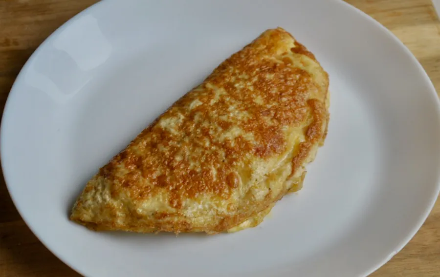

Omelette

Description:
Plato simple el cual se remonta en la prehistoria, too many years ago, un manjar de los dioses.
Low in fat.
Muito proteico.
Mucha Vitamina A, B and D. Some minerales like hierro, magnesio, calcio and potassium.
Ingredients:
- 2 Eggs derechos
- Aceite de olivia
- Salt and pimienta
- Milk
Steps:
- Un poco de aceite en una sarten a fuego medio.
- En un bol, agregar los huevos, a little of milk, salt and pimienta, y se revuelve hasta crear una mezcla homogenea.
- Una vez caliente el aceite, agregar los huevos al sarten, esperar a que los bordes esten cocinados, luega se levanta el omelette de un lado con espatula.
- Se voltea cuando este casi lista y se pasa a un plato, saludos.